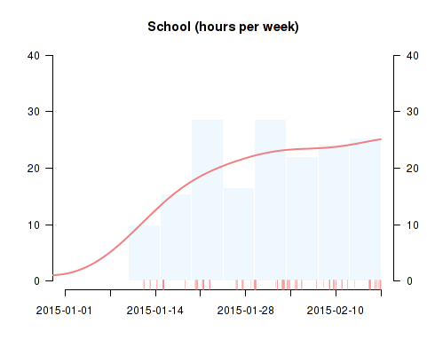
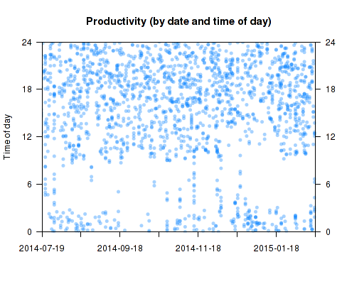
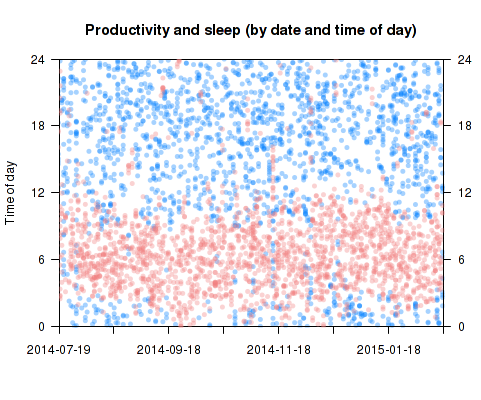
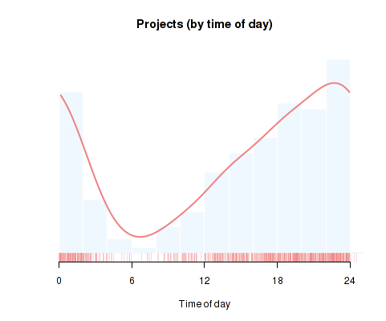
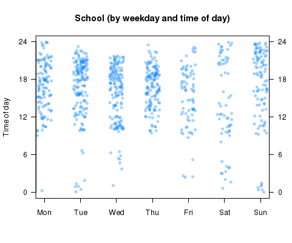
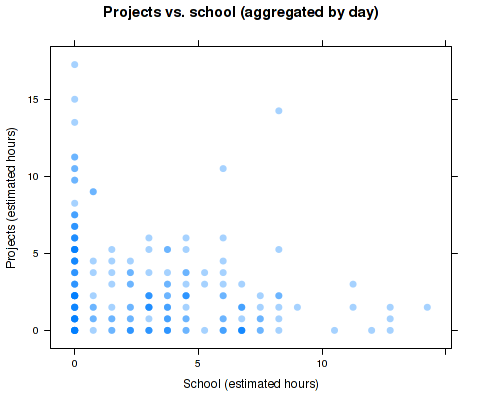
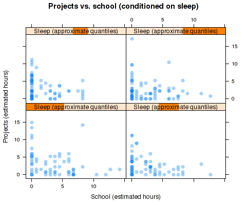

TagTime Visualizer is a Shiny app that grew out of some R scripts I made to visualize my TagTime data. If you use TagTime, this is probably the best way to make pretty and informative graphs of your data (at least as of early 2015). You can access the app here; a demo with some of my own data is here. The respective GitHub repositories are here and here.
This post describes some of the functionality of TagTime Visualizer. Please contact me if you have any questions, comments, or feature requests and the like.

This allows you to explore trends in the amount of time devoted to various activities. The raw data points form a rug next to the x-axis; the main visualization is a histogram with a kernel density curve superimposed. Note that you can adjust the smoothness of the density estimate on a sliding scale, as well as the number of bins in the histogram and the scale of the y-axis (hours per week vs. hours per day).

This type of plot displays time trends as well as patterns in the time of day devoted to activities, by plotting each ping according to its date and time of day (on an ascending 24-hour scale). It is one of the richest plots available; the trend and "time of day" visualizations (see below) display only the margins of this matrix. Note that you can set your own "custom midnight" - your de facto boundary between days. You can also add a second activity to the same plot. Below I added sleep pings to the above matrix plot of productivity:

In the same style as the trend plot, this visualization displays a relative measure of how an activity is distributed throughout a typical day. Here is my own data for time spent on personal projects:

Note the option to include all days, only weekdays, or only weekends in the plot.

Another fairly rich plot. By default, the data points are horizontally jittered/shuffled within each weekday, so it only shows aggregate patterns in how much time you spend on a given activity throughout the week. Checking the "order chronologically" checkbox will sort the data within each weekday "bin" chronologically, allowing you to simultaneously look at daily, weekly, and long-term patterns (at the cost of being a bit hard to interpret).
To explore relationships between the time devoted to distinct activities within a single day, simple scatterplots are a convenient tool. Here is some aggregate data on my tradeoff between time spent on school and personal projects:

The aggregation method used here is the one used in Beeminder: the number of pings in each day is summed and converting to the equivalent in hours. The discreteness makes overplotting a concern, which is dealt with using transparent plotting characters and the "jittering" option (I disabled it here). If you're feeling really adventurous, checking the box "condition on a third variable" will give you a trellis plot where each panel conditions on an (approximate) quartile of the selected variable, in my case sleep:
